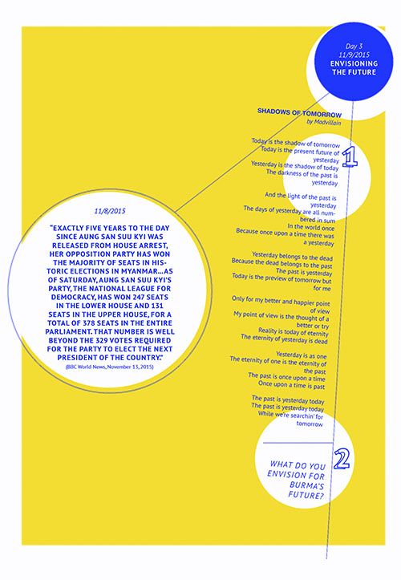

Myanmar, also known as Burma, is the largest country in mainland Southeast Asia that is bordered by Bangladesh, India, China, Laos and Thailand. After three Anglo-Burmese wars over a period of 60 years, the British completed their colonization of the country in 1886 and administered it as a province of India. The British government ruled primarily among the Burman populations, and had less involvement in the affairs of the rural ethnic minority groups. This disproportionate control of power deepened the existing divisions between the Burman population and the minority groups, which include Karen, Chin and Rakhine.
In the beginning of World War II, Aung San, a student activist, and 29 others, known as the Thirty Comrades, fought alongside the Japanese who invaded Burma to overthrow the British rule. However, Japan did not follow through with the promise of returning Burma to it’s people and Aung San negotiated with the British to push the Japanese back out of the country. After years of Aung San’s work towards independence and after his assassination, Burma was finally granted independence on January 4, 1948. Unfortunately, Burma still struggled to establish a democratic government as it was challenged by a civil war that was lead by communist and ethnic groups.
General Ne Win, one of the Thirty Comrades, staged a coup which allowed his new Revolutionary Council to suspend the constitution and institute an authoritarian military rule. By replacing the parliament with a military dictatorship, jailing opponents of his party and cutting off contact with the outside world, Ne Win established a one-party country, heightened tensions between ethnic groups and eventually completely drained the nation’s economy.
Since the initial years that Ne Win took power in 1962, there were many sporadic protests against the military ruled government that were brutally suppressed. However, in 1988 demonstrations broke out across the country in, what was known as, the 8888 Uprising.
This uprising was started by students in Rangoon and was motivated by a frustration with the military rule, police brutality, economic mismanagement and complete corruption within the government. On July 23, Ne Win announced his resignation of BSPP party chairman and warned civilians, that “When the army shoots, it shoots to kill.” Protests continued to escalate until August 8th, when troops began a four day massacre, firing into crowds of civilians, from monks, young children, students, doctors and housewives, killing thousands. At least 10,000 demonstrators were killed across the country, although Burmese authorities only formally acknowledge 350.
After giving a speech urging civilians to find peace through non-violent ways in front of a crowd of 500,000 at the Shwedagon Pagoda on August 26th, Aung San Suu Kyi, daughter of independence hero Aung San, became a symbol of the struggle for democracy in the nation. When she returned to Burma, Aung San founded the National League for Democracy (NLD) and this summer became known as the Democracy Summer. However, on September 18th, 1988, control of the country was handed to a 19-member State Law and Order Restoration Council (SLORC). Only a few months later, on July of 1989, Aung San Suu Kyi was placed under house arrest for “endangering the state.”
On May 27, 1990 Suu Kyi’s NLD party swept to victory with 82% of the vote of multi-party election but SLORC refused to acknowledge the election results and has retained its repressive grip on power. Aung San Suu Kyi remained under house arrest for almost 15 years, from July 20th, 1989, until her most recent release on November 13th, 2010. Due to all of these years of heavily militarized rule, close to half-a-million Burmese people have fled their country of origin. Most refugees reside in neighboring or nearby countries and approximately 98,000 live in the U.S.
On November 13th, 2015, the NLD secured the required two-thirds of the contested seats in parliament to win a majority. Burma is looking forward to upcoming presidential election and its way towards a peaceful and authentic democracy.
Aung San Suu Kyi, a Nobel Peace Prize awardee, is a Burmese opposition politician and chairperson of the National League for Democracy (NLD) in Myanmar. Inspired by the non-violent campaigns of US civil rights leader Martin Luther King and India’s Mahatma Gandhi, she organized rallies and travelled around the country, calling for peaceful democratic reform and free elections. During her 15 years of house arrest, from July 20th, 1989 to November 13th, 2010, Aung became one of the world’s most well known political prisoners and was nicknamed “the Lady.” In a historic moment for Myanmar, on November 13th, 2015, the NLD secured the required two-thirds of the contested seats in parliament to win a majority and are working towards establishing a true and authentic democracy for Myanmar.
MAPPING CHANGE IN MYANMAR
MAPPING OUR HUMAN RIGHTS
The morning comes in
don’t know what will happen.
Thinking back about yesterday
a lot of tears are full with me
The days are started
the times, the second, minutes are keep moving
don’t know what will happen
Learn in the day but none of works is in my mind
the period, the day, the mod of our time
are changing one by one
Still don’t know what happen
people chasing me and bullying me
What happened? Still don’t know
nothing in my mind even to think about work
& school stuff
Times to go home don’t feel like it
because don’t know what happens
What if I get home and mom’s welcome me
with a lots of tears & sadness
What would I do
I’m still young, how can I help my mom
Days goes by and comes the night
hearing about yelling & shouting
What’s wrong with me?
why this happened to me?
Acting like a good, nice person
But why inside of my heart always full with
tears........?
The policy turn into peaceful means.
That make it-up a new laws: For ex.
Freedom of Speech
Freedom of Religion
Freedom of Assemble and
Freedom of Express.
Will turn a freeze place to a warm
place for a bright world.
People were feel free to worship their own God.
People can vote with their own decision.
Help each others with no comparison.
To have a beautiful world and peaceful
as a park that full of colors.
The world that I can’t spoke out loud
But spoken from bottom heart
I cried out from inwardly
No one could understand or hear, but me
just because of
Don’t want to contraries others’ opinion,
Also no one would feel
Any harassment as well.
Just for refusing contrary.
Desperately hurt from inside,
What had been retraining to speak.
“...a time to week and a time to laugh
a time to mourn and
a time to dance...”
(Bible: ecclesiastes 3:4)
That is life.
But the rustle of leaves
send me back to normal
Ultimately deeply cried inside and
Now’s already turned akid
Time had been passing by
as fast as words could fly
Couple:
The relationship between boys and girls
were not firming as ancient.
No stronger than the string.
It is not spontaneous between
the relationships no more.
Everything’s concealing to each other.
Just spending time
as a free time to each other
Don’t waste people’s heart and
their time with nonsense.
Family:
Everyday was different from the past.
As the develop country,
there’s no time together with family.
Had much focusing on their goal
as forget the time as normal.
When they’re gathering,
they thought it’s funny
how things changed.
Environment:
People thought time goes usually, but
they laughed as they thought.
Some were lived their life
with doubtful future.
Changed your loneliness life
to a bright future.
Don’t waste your time
meaningless.
What make me happy?
-> Play soccer
-> Listen to music
-> Watch movie
-> Pray together with family
-> Play with friends
-> Sometime go to school
-> Sometime go to church
Thing that I know but I can’t doing?
-> make teacher happy
-> make friends happy
-> make parent happy
Why are student fight?
-> their parent
Why people want do bad thing?
-> rich or poor
-> their parent
1. What is most the important thing in your body?
-> your heart
2. Why are christian people different from other people?
-> all christian people one person
3. Why people don’t want to go church or school
-> teacher
-> student
-> to hard
-> too lazy
Someone ask me
did you see at the sea?
I was like, will you
repeat me again?
When I learn english at the first time
and they teach me like
I walk to work.
I was like
work to work
so they don’t understand me
At my history class and she taught me
and she told us like this “Now we will talk about
the second war in the world” and she told me
to read so I read it but my voice is not clear
so she made me to clear so pronounce this letter
“War of World,” and I did, but for me, the sound is the same
but for them, or for who are really good at English
it is different.
My friend told me again
Will you buy for me some chips
and my friend to me bye
and I’m so upset so I ask them again
will you repeat me again pls....
In the breaking news
I heard one thing that I’ve never forgot
YOUR DAD IS DEAD I was like
WHAT I didn’t get it.
Base on my friend that I heard
We will go to some nice place on vacation
and I ask them where?
They told me
We will go to the Beach and right there
there’s a lot of Bxtxh, and I was like
OMG....Really! I don’t understand
what you just said.
I ate food and ppl ask me the middle of
I was eating and then said kick that
but with your foot and I was like
Hey! No. I’m eating the food that’s impossible.
They be like hahahaha.... this guy is so dumb.
I visited to some of my friend and
they told pls...
will you turn on the gas
cause the guest will hungry and starving and I said huh
and my friend said I guess that’s all thanks buddy
I was like OMG!....
I Apologize this sound like creepy, but just
wanna explain how I confused to speak those words.
I chill out with my friend and
my friend told me “some fat people is so big
and their ass... I mean ass is butt, but it sounds
for me confused when I read those words like
but and butt.
When I will grow up and I will graduate my school.
I want to be a doctor, then I will be take care of my <
family and help poor people.
But now I can’t speak English very well but I try too <
hard to speak English very well.
I was try to success my goal.
That’s what I pray for God.
I need to achieve my ambition I need hard working more
than my friend.
That will be my goal ambition…
My family will not never live city.
Then if I will got job kind my ambition,
I will send them to city.
I will be like morning sun shine of my family.
I bring them my hope with happiness.
Every chance I get, I think of you.
I imagine scenes that I want for it to happen.
I want to do so much with you.
Even just imagining of us being together is so
soothing but after all these, its just an imagination.
It’s not reality and it’s just in my head
I want your attention on me.
As you have already learned,
Life is unfair
It doesn’t always go as you plan
but know that God has his way for us.
so don’t worry and have faith in him.
Life have something for you.
There is a reason that you’re here today.
Always be happy and grateful that you are here today.
Time go by itself
Life go by fate but
it has limited like stop as death.
yesterday is closed door
Today is experience and seeing or struggle
Tomorrow is your time need to prepare
Never forget when you’re successed.
like how you got to the top cause
everyone started from the body.
Singing is my appetite
Listening is my feeling
If I rule the world, there would be peace.
There will always be plenty of food so that no one
will ever be hungry again.
It would be poverty-free because it breaks my heart to
see people without home.
It would be safe for everyone.
There wouldn’t be a big difference between social classes because I don’t like seeing poor people.
There wouldn’t be bad things or bad people who influence good people to follow their foot step.
I would influence every person to do good, be happy, be loving, be considerate, be kind, be helpful, be trustworthy, be caring, and all the good qualities.
I would enforce laws that doesn’t allow violence, drug, and other bad things people do today.
Life is Unique in each and every way
It isn’t about all the happiness but
It’s also about the failures
Failures are things that make you success,
Makes you stronger, makes you
Become a better person. That’s how life is,
All you need to know is that you should never
Up, just like Thomas Edison once said;
Our greatest weakness lies in giving up. The
Most certain way to succeed is always
To try just one more time.
The darkness of the past need to go away.
The future of life have to be full of happiness.
Mom tears need to go away from the world.
Hardest things that had happened in family
have to gone.
My life will be so bright as a rainbow.
It will fill with a colorful on me.
When my dream was come true,
It will be like a blue-sky and
It will be different from the past.
I will leave my shadow as my past.
Having fun with friends / squad was
the fastest time spinning by.
Create some memories was
the fastest time passing by.
Don’t know why the time that much fast.
Happiness is the best moment but
don’t let the people on the top of you
Use your time so faithfulness.
Time’ll never waiting, but we wait.
This world keep on spinning.
Use your time wisely as
you will never regret.
Dance by yourself and
Get a new lesson every day.
Fight your life as you wish to be.
Life isn’t easy but
there’s a way to fight for it.
Think the things as positive.
Baltimore City Community College (BCCC) provides outstanding educational, cultural, and social experiences to the citizens of Baltimore, the state of Maryland, and surrounding areas. For nearly 30 years, BCCC has provided English language training to meet the critical needs of more than 5,000 refugees who have settled in the Baltimore metropolitan area and statewide. Its range of programs for refugees includes English language training, citizenship preparation, and job skills training. The Refugee Youth Project (RYP) is one of the College’s unique refugee programs.
The RYP is fully grant-funded by the Office of Refugee Resettlement’s School Impact Grant. This grant is distributed and monitored by the Maryland Office of Refugee and Asylees which provides support and services to refugees to ease their transition into American society, and serves as a resource to the governor and general assembly on refugee and immigrant policy. The RYP currently serves more than 300 refugees between the ages of 4 and 21 from over 17 countries.